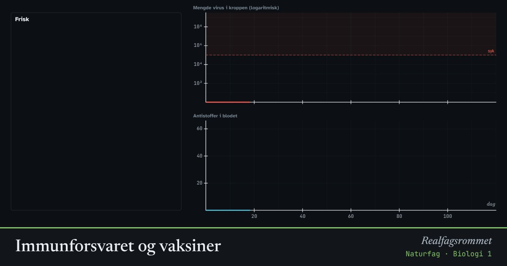

Immunforsvaret og vaksiner
Første gang kroppen møter et virus, tar det over en uke å lage nok antistoffer. Da rekker du å bli syk. Etterpå har kroppen minneceller, og neste gang kommer forsvaret mye raskere. En vaksine gir minnecellene uten at du må bli syk først.
Start animasjonen
Formler
Om animasjonen
Viruset formerer seg raskt i kroppen. Når mengden blir stor nok, får du symptomer (over den stiplede linja). Grafen for virus har logaritmisk skala: hver strek oppover er ti ganger mer.
B-celler som kjenner igjen viruset, deler seg og blir plasmaceller som lager antistoffer. Antistoffene fester seg til viruset slik at det blir uskadelig. Første gang tar dette lang tid: det er primærresponsen.
Noen av cellene blir minneceller som lever i mange år. Neste gang kommer sekundærresponsen raskt og kraftig, ofte før du merker noe.
En vaksine inneholder antigen fra viruset, men kan ikke formere seg. Den gir en svakere respons, men lager minneceller. En oppfriskningsdose gir enda flere minneceller og bedre beskyttelse. Modellen er forenklet.
Prøv dette
- Smitt en person som ikke er vaksinert. Hvor mange dager tar det før antistoffene virkelig øker? Hvor mange dager er personen syk?
- Vent til personen er frisk, og smitt på nytt. Hva er forskjellen?
- Start på nytt, gi én vaksine og smitt etter omtrent 50 dager. Gi så to vaksiner før smitte. Sammenlign.
- Hvorfor kan det være nødvendig med oppfriskningsdoser?
Kompetansemål
- Naturfag: Helse og livsstil, og hvor pålitelig informasjonen er
- Biologi 1: Virus, bakterier og sykdom
- Biologi 1: Vaksiner på individ- og populasjonsnivå
Mer om kroppen: nerver, hormoner og immunforsvar
- Nerveimpulsen: aksjonspotensialet
- Blodsukker: insulin og glukagon
- Hormoner og menstruasjonssyklusen
- Melkesyre: fra melk til yoghurt og i musklene